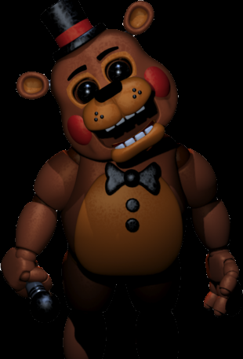

Toy Freddy

“You can trust me — I'm friends with everyone!”
- Toy Freddy
- Toy Freddy is one of the toy animatronics of the Five Nights at Freddy's series, first appearing in Five Nights at Freddy's 2. He is Freddy Fazbear's "redesigned" counterpart from the past and an improved replacement of Freddy's pre-rebuilt incarnation Withered Freddy, serving as the mascot of the newly refurbished Freddy Fazbear's Pizza of 1987.
Physical Appearance
- Toy Freddy has a similar appearance to his original counterpart. He is a brown animatronic bear with light brown coloring on his stomach, snout, and inner ears. He has black whisker spots, black eyebrows, brown eyelids, short eyelashes, blue eyes, and a black nose. As with the other toy animatronics, Toy Freddy has rosy red, blushed cheeks. However, unlike the other toy animatronics, he appears to have a matte coating rather than a glossy finish. His arms and legs are multi-jointed, like the other toy animatronics, but most appear darker.
- Toy Freddy's face is much flatter, wider, and significantly more round than the original Freddy Fazbear's, with noticeably more buck teeth. He also seems to be the widest of the toy animatronics, as his body is much bigger compared to that of the original Freddy's. His ears are also much smaller and more oval in shape. He wears a black bow tie with two black buttons beneath it. He also wears a small black top hat with a red stripe. In his right hand, he holds a silver and black microphone.
- Toy Freddy's eyes normally appear to be similar to those of the other animatronics, but upon entering the Office, his eyes turn to a glossy-black that cause his eyes to look empty.
- In Five Nights at Freddy's VR: Help Wanted, he seems to be a darker brown. Plus, he has no teeth on his upper jaw, similar to his original counterpart from Five Nights at Freddy's.
Personality
- Scott Cawthon describes him as "private and reclusive". Toy Freddy's personality, as suggested in his quotes from Ultimate Custom Night, he appears pouty, wisecracking, and childish as he will get upset by his own failure to beat video games, especially the "Five Nights with Mr. Hugs" game.
- In Five Nights at Freddy's AR: Special Delivery, Toy Freddy speaks in a more affable manner, seemingly treating the player as a friend.

Alias
New Freddy
Occupation
Lead Vocalist
Mascot
Mascot
Affiliation
Freddy Fazbear's Pizza (1987)
Owner
Fazbear Entertainment, Inc.
Voice Provider
Darren Roebuck
Mascot
Bear
Skin Color
Brown
Eye Color
Blue
Gender
Male
Animatronic Set
Toys